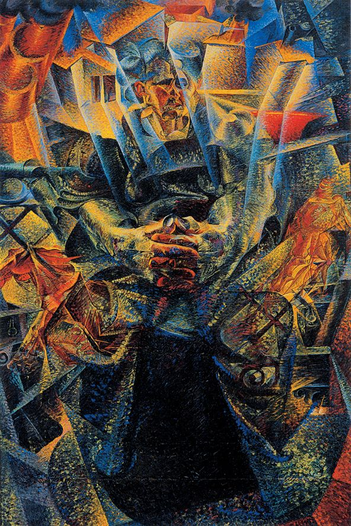

Umberto Boccioni was one of the most prominent and influential artists among the Italian Futurists, an art movement that emerged in the years before the First World War. Boccioni was important not only in developing the movement's theories, but also in introducing the visual innovations that led to the dynamic, Cubist-like style now so closely associated with the group. Emerging first as a painter, Boccioni later produced some significant Futurist sculpture. He died while volunteering in the Italian army, aged only thirty-three, making him emblematic of the Futurists' celebration of the machine and the violent destructive force of modernity.